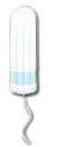

Menstrual Product Usage Instructions
Language:
English
Español
Français
Tampons
Menstrual Cups
Pads
How to Use Tampons

Wash your hands before opening the tampon package.
Sit or stand in a comfortable position.
Insert the tampon into your vagina at a slight angle.
Push the tampon applicator's plunger to release the tampon.
Dispose of the applicator and wash your hands.
How to Use Menstrual Cups
Wash your hands and the menstrual cup with water and mild soap.
Fold the menstrual cup and insert it into your vagina.
Rotate the cup slightly to ensure it has opened fully.
Wear the cup for up to 12 hours.
To remove, pinch the base of the cup, pull it out gently, and empty it.
Wash the cup and your hands before reinserting or storing it.
How to Use Pads
Remove the pad from its packaging.
Peel the adhesive backing off the pad.
Press the pad onto the inside of your underwear.
If the pad has wings, fold them around the edges of your underwear.
Change the pad every 4-6 hours, or as needed.
×
Congratulations!
You've completed all the steps.

.png)